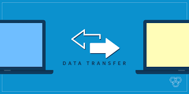
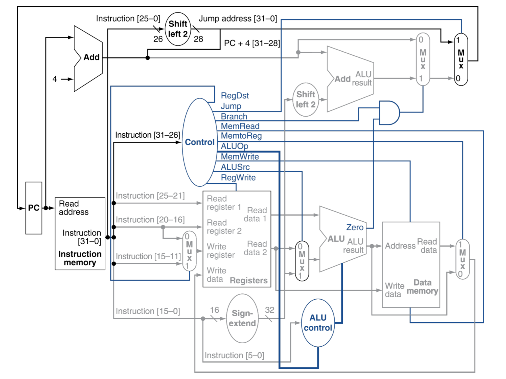

Portfolio
Here are some of my technical projects I have done at school

ECG Data Transfer
In my Introduction to Computer Systems class, I created a client and a server program that could communicate over the network. I used C++ on linux to code a server program that could accept and fulfill file and data requests from a client program. After receiving a request from the client, the server could send files or write text into a file and sent it to a client.

Single Cycle Processor and Control Unit
I constructed a simple processor on a raspberry pi in my Computer Architecture class. I used ARM assembly language to code all of the different components such as the controller, register file, and data memory. I then connected them all and created a data path for a single cycle processor with a control unit.
© 2022 Ethan Ting